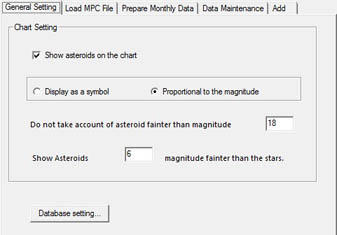

Sistema solar
La configuració del sistema solar té quatre pestanyes:
Sistema solar
 En aquesta pestanya especificarem el directori per a les imatges dels planetes.
En aquesta pestanya especificarem el directori per a les imatges dels planetes.
Indiqueu si la vostra posició és geocèntrica o topocèntrica i si Plutó és o no un planeta.
Planeta
 Podeu habilitar o inhabilitar el dibuix del Sol, els planetes i els satèl·lits en el mapa.
Podeu habilitar o inhabilitar el dibuix del Sol, els planetes i els satèl·lits en el mapa.
Hi ha disponibles quatre modes per dibuixar els planetes, que es mostren més diferenciats a mida que el camp de visió va baixant de 45 graus.
Després de descarregar de el programari de Xplanet el podreu usar per accedir a les imatges realistes dels planetes.
Podeu actualitzar la longitud de la Gran Taca Roja de Júpiter (GRS): la icona dreta obre pàgina Jupos en el vostre navegador, on trobareu la longitud GRS en el menú del costat esquerre.
Marqueu Mostra l'ombra de la Terra per simular els eclipsis de Lluna.
Mode transparent (ocultació) permet veure els estels que es trobin darrera dels planetes (útil per a les ocultacions).
Cometa
 Abans de mostrar els cometes cal que descarregueu la darrera versió del fitxer del MPC (Minor Planet Center) a la base de dades.
Podeu també afegir nous elements orbitals i suprimir totes les entrades o només les obsoletes de la base de dades.
Hi ha quatre pestanyes en aquesta finestra:
Abans de mostrar els cometes cal que descarregueu la darrera versió del fitxer del MPC (Minor Planet Center) a la base de dades.
Podeu també afegir nous elements orbitals i suprimir totes les entrades o només les obsoletes de la base de dades.
Hi ha quatre pestanyes en aquesta finestra:
- Paràmetres generals on:
- Decidiu veure o no els cometes en el mapa.
- Els cometes es poden veure com un símbol o bé com un estel amb la mida proporcional a la de la cua.
- Podeu filtrar els cometes per sota d'una magnitud límit. Però podeu mostrar cometes que tinguin una magnitud més feble que la magnitud mínima definida per als estels.

- Carrega arxiu (el primer fitxer MPC disponible que hagueu d'usar):
- El botó Descarrega baixa el fitxer actual dels elements orbitals dels cometes des de: IAU Minor Planet Center i desa les informacions en la base de dades. El fitxer origen es desa com COMET-aaaa-mm-dd.DAT on aaaa-mm-dd és la data de descàrrega.
- amb Utilitza l'arxiu local i la icona de directori, podeu especificar qualsevol dels COMETxxx.DAT i carregar-lo a la base de dades amb el botó Carrega arxiu . És automàtic després de la descàrrega.
- Una finestra de missatges mostra el procés i els resultats.

- Manteniment dades és on podeu eliminar les entrades obsoletes de la base de dades o el conjunt de bases de dades de totes les informacions de cometes. Un missatge deixa veure l'evolució del procés.

- Afegeix és on podeu entrar els elements orbitals d'un cometa nou a la base de dades.
Asteroide
 Abans de mostrar els asteroides cal que descarregueu la darrera versió del fitxer del MPC (Minor Planet Center) a la base de dades. Podeu també afegir nous elements orbitals i suprimir totes les entrades o només les obsoletes de la base de dades. Hi ha cinc pestanyes en aquesta finestra:
{kind=link}
- Paràmetres generals on podreu:
- Decidir veure o no els asteroides en el mapa.
- Els asteroides es poden veure com un símbol o bé com un estel amb la mida proporcional a la magnitud.
- Podeu filtrar els asteroides per sota d'una magnitud límit. Però podeu mostrar asteroides que tinguin una magnitud més feble que la magnitud mínima definida per als estels.
{kind=link}
- Carrega arxiu (el primer fitxer MPC disponible que hagueu d'usar):
- El botó Descarrega baixa el fitxer actual dels elements orbitals dels asteroides (brillants, no usuals i distants) des de: IAU Minor Planet Center i desa les informacions en la base de dades. El fitxer origen es desa com MPCORB-aaaa-mm-dd.DAT on aaaa-mm-dd és la data de descàrrega.
Si la descàrrega dóna problemes, comproveu com teniu la part inferior de la finestra de diàleg en Configuració → Internet → Elements orbitals .
- amb Utilitza l'arxiu local i la icona de directori, podeu especificar qualsevol dels MPCORBxxx.DAT i carregar-lo a la base de dades amb el botó Carrega arxiu . És automàtic després de la descàrrega.
- Una finestra de missatges mostra el procés i els resultats.
{kind=link}
- Dades mensuals processa les dades per a l'interval d'un mes. Una finestra de missatges informa del procés i els resultats.
{kind=link}
- Manteniment dades és on podeu eliminar les entrades obsoletes de la base de dades o el conjunt de bases de dades de totes les informacions d'asteroides. Un missatge deixa veure l'evolució del procés.
{kind=link}
- Afegeix és on podeu entrar els elements orbitals d'un asteroide nou a la base de dades.